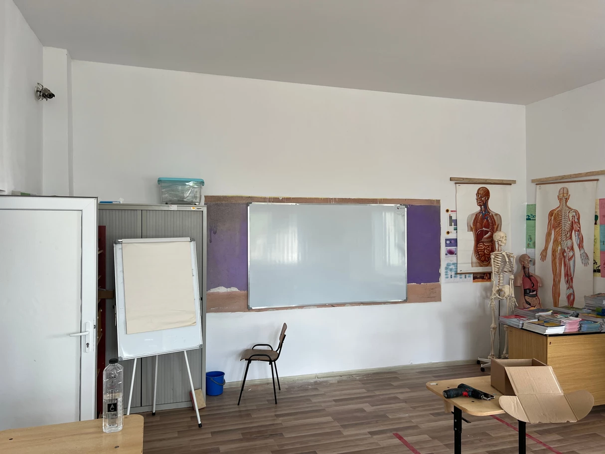

Pandemia COVID-19 a avut un impact major asupra sistemului educațional din România. Perioada de învățământ la distanță și-a pus amprenta asupra elevilor precum și asupra profesorilor.
De aceea ne-am gândit că putem da un restart la relația dintre elev - școală dar și cea profesor - școală prin a modifica una din căile de comunicare, și anume, tablele școlare de scris.
Am aflat cu stupoare că încă mai există școli, licee unde încă există table școlare pe care se scrie cu cretă.
Am inhalat noi destul praf de cretă generațiile trecute.
E timpul să punem stop ! E timpul să spunem NU prafului de cretă ! E timpul să dăm un restart !
Ne-am propus să schimbăm tablele de scris tradiționale cu unele magnetice pe care le importăm direct din China pentru a putea
ajuta cât mai multe școli și licee din satele și comune ale județului Constanța, ba chiar și din orașul Constanța.
Am reușit să donăm și să montăm într-o singură zi:
Urmează să ajutăm și alte instituții școlare. Dacă ai încredere în proiectul nostru și vrei să ne susții, vizitează rubrica de donații și alege varianta potrivită pentru tine. Doar împreună putem face o diferență !
Urmărește rețelele noastre de socializare pentru update-uri.
Între timp, vizitează secțiunea de poze să vezi ce am reușit să facem.

Pe scurt, despre ceea ce facem
Rețele de socializare
Ajutăm persoanele ale căror vieți și mijloace de trai sunt spulberate de conflicte și dezastre să supraviețuiască, să se
recupereze și să câștige controlul asupra viitorului lor.
Creștem gradul de conștientizare al comunității legate de protecția mediului, energia, conservarea naturii și dezvoltarea durabilă.
Ajută comunitatea | Salvează natura | Donează | Începe azi